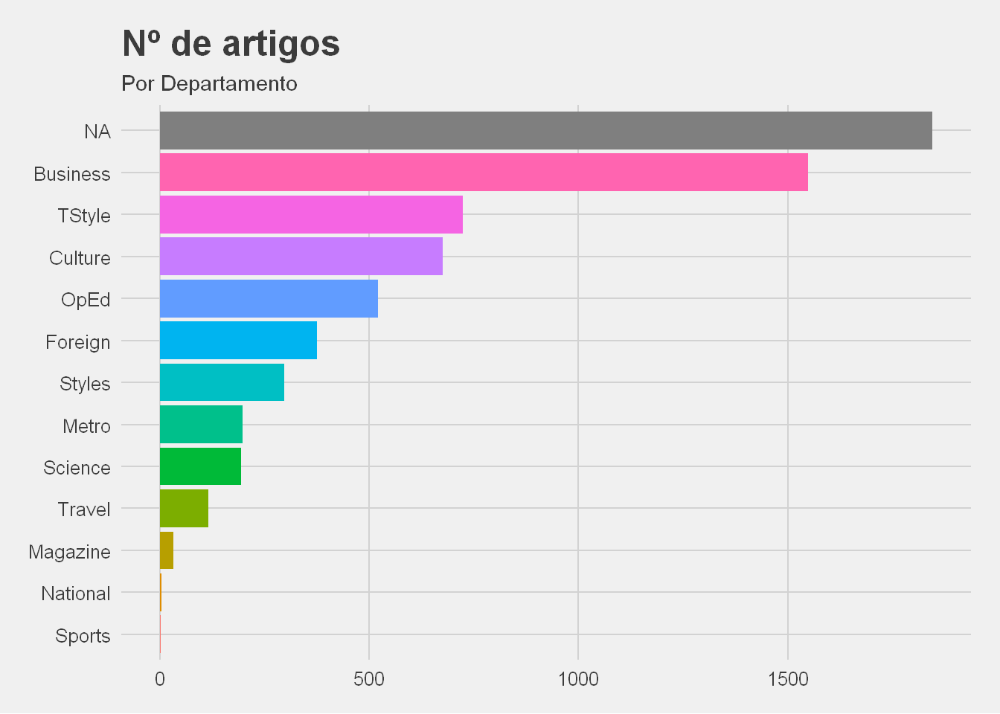
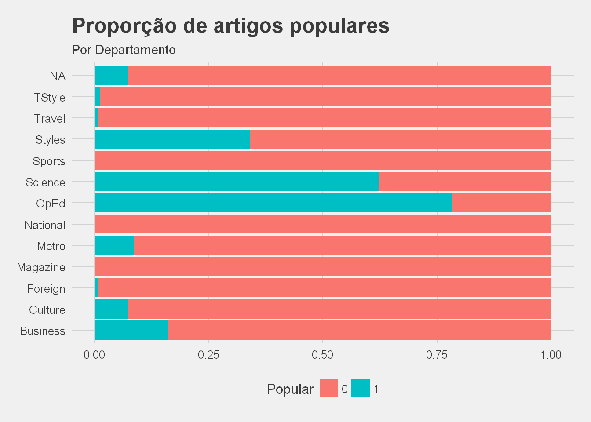
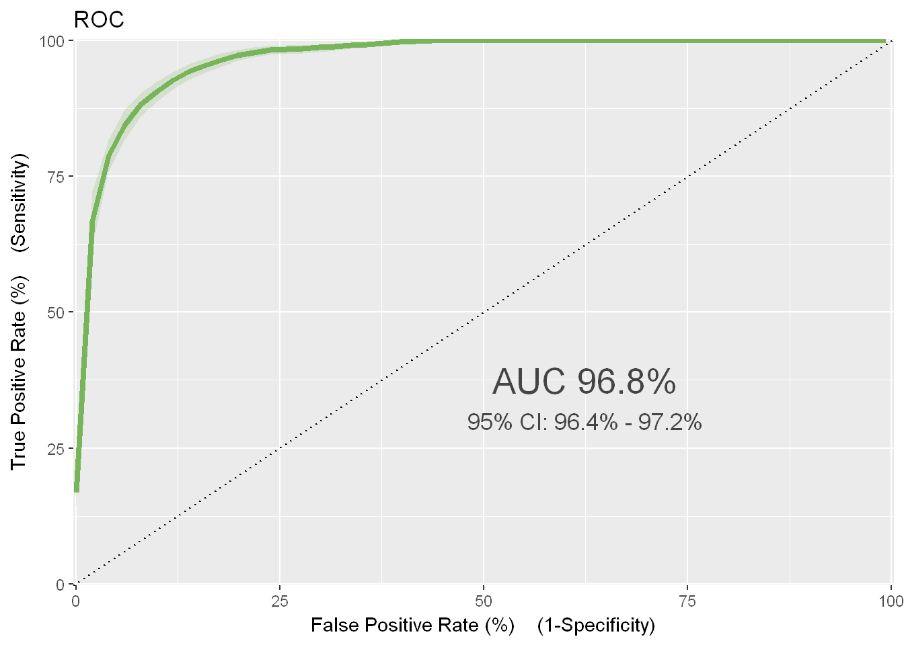

By António Cruz | March 6, 2017
O objetivo dos artigos referentes às competições da Kaggle é de exemplificar o que pode ser feito com o Machine Learning. Embora algumas das competições sejam tutoriais (e mesmo estas utilizam dados reais), a grande maioria é baseada em situações e dados reais e promovidas pelas entidades com objetivos concretos e de negócio.
Esta competição que decorreu entre 14 de abril de 2015 e 4 de maio do mesmo ano, era uma competição privada e fazia parte do curso The Analytics Edge da edX. Esta competição era o projeto final e contava para a avaliação do curso.
O que torna os artigos de notícias on-line populares?
Jornais e agregadores de notícias on-line como o Google News precisam de entender quais os artigos de notícias que serão os mais populares, para que eles possam priorizar a ordem em que as histórias aparecem. Muitos artigos de blog são publicados a cada dia e o New York Times tem que decidir quais os artigos que devem ser apresentados.
O objetivo da competição era desenvolver um modelo que permitisse prever a popularidade de um conjunto de artigos do blog do New York Times do período de setembro de 2014 a dezembro de 2014 e ajudar a entender as características que tornam um post popular.
A variável dependente, a que se pretendia prever, é uma variável binária que pode assumir um de dois valores:
1 se o artigo tem mais de 25 comentários;
0 se o artigo tem menos de 25 comentários.
O objetivo é, portanto, prever para um conjunto alargado de artigos, dos quais nós desconhecíamos o número de comentários, se irão ter mais ou menos de 25 comentários. Conseguir prever os artigos que vão ter mais comentários permite uma mais efetiva seleção dos artigos a publicar.
Dados
Como é normal nas competições de machine learning, foram disponibilizados dois ficheiros com os dados da competição:
Um ficheiro com os dados de treino, ficheiro que continha a variável dependente que pretendemos prever. Os dados de treino servem para criar o modelo;
Um ficheiro de teste, ficheiro que não contêm a variável dependente e que será, utilizando o modelo construído, utilizado para prever se os artigos irão ter mais ou menos de 25 comentários.
Os dados de treino contêm 6532 artigos que são caracterizados por 10 variáveis.
Os dados de teste contêm 1870 artigos, para os quais temos de prever a sua popularidade.
Podem analisar, como exemplo, 10 artigos do ficheiro selecionados aleatoriamente:
Como podem verificar, os dados têm algumas particularidades:
Com a exceção do nº de palavras, da data e do campo binário que pretendemos prever, as restantes variáveis são texto;
Existem muitos artigos com variáveis em branco, como o departamento, a secção e subsecção;
As variáveis extrato e abstrato são muitas vezes idênticas;
Existem conteúdos das variáveis texto que são números e que neste contexto podem não acrescentam valor.
Os fatores referidos anteriormente tornam esta competição bastante interessante, nomeadamente pelo facto de estarmos dependente de texto, sendo necessário alguma capacidade de Natural Language Processing.
Podemos também verificar, nos dois seguintes gráficos, que o número e proporção da popularidade dos artigos por departamento varia:


Como podemos ver, existem departamentos com muito poucos artigos e o nº de artigos populares é bastante inferior aos impopulares. Esta ultima situação, resultados desequilibrados, causa normalmente problemas na construção dos modelos.
Feature Engeneering
Previamente à construção do modelo torna-se necessário proceder a um conjunto de transformações e criação de novas variáveis.
O primeiro passo incluiu as seguintes transformações aplicadas às variáveis de texto:
limpar espaços em branco;
converter todas as palavras para minúsculas.
O segundo passou por criar novas variaveis através das seguintes transformações:
Criar duas listas, uma relativa aos artigos populares e outra relativa aos artigos não populares, com as palavras mais mencionadas no Cabeçalho e Abstrato e que fazem parte das 25 palavras mais comuns do Inglês (Fry, E. B. - 1997. Estas 25 palavras somam um terço de todo o material impresso em Inglês);
Da lista das palavras dos artigos populares, retirar as palavras que constam também da lista dos artigos não populares;
Criar duas variáveis, uma para o cabeçalho e outra para o abstrato, se o texto contem palavras que constam da lista anterior;
Criar variáveis para o dia, hora e dia da semana;
Agrupar os departamentos, secções e subsecções com poucos artigos;
Para cada artigo contar o número de palavras no cabeçalho, se o abstrato e cabeçalho contêm números, e se o abstrato tem apostrofes;
Criar uma variável com a categorização do número de palavras do artigo: até 25 palavras, até 50, até 75, até 100;
Criar uma variável com a categorização da hora de publicação: até às 17 horas e depois das 17 horas;
Criar uma variável que define se o artigo foi publicado durante a semana ou durante o fim de semana;
Foi feita a imputação dos campos em branco com base num conjunto de técnicas apropriadas;
Foram, adicionalmente, feitas mais um conjunto de transformações onde se incluem a contagem de sílabas e outras.
Depois de efetuadas as diversas transformações, os nossos dados de treino passaram a ter 24 variáveis.
Para vossa consulta, junto 10 exemplos escolhidos aleatoriamente:
Os modelos
A métrica definida para avaliar a qualidade do modelo é a AUC e é uma medida de avaliação da qualidade do modelo, para problemas binários, mais robusta que apenas quantificar a percentagem dos resultados previstos corretamente.
Assim, a AUC é independente da percentagem da população que é positiva (popular) ou não, e portanto adequada a dados desequilibrados (como é o caso).
O seu valor varia entre 0 e 1, sendo obviamente 1 o resultado perfeito (prevejo corretamente para todas as situações).
Foram feitas várias submissões, utilizando técnicas diferentes e conjunto de dados com transformações diferentes.
No total da competição realizei 27 submissões.
O meu modelo final foi uma random forest com 1000 árvores.
Os dados seguintes foram calculados com uma versão atual do algoritmo utilizado (e portanto melhor) e com base nos dados do ficheiro de treino.
Como não sei a popularidade dos artigos do ficheiro de teste, não posso realizar estes cálculos para esse conjunto de dados.

Como podemos verificar a AUC resultante para os dados de treino é de 96%. Nada mau.
Podemos também perceber, pela confusion matrix, que o modelo previu erradamente 283 artigos como populares que não o eram, e previu 159 artigos como não populares que eram populares. Isso significa que o modelo acerta, para o total de 6532 artigos do ficheiro de treino, em 93% deles.
Resultado
Terminado o prazo da competição, a Kaggle calcula o resultado com base nas nossas submissões e num subconjunto dos dados de teste. A primeira submissão por mim apresentada resultou num AUC de 69.3%. Mas a minha AUC final foi de 90.7%.
Embora o mais importante não seja a classificação, isto não deixa de ser uma competição e o meu resultado final valeu-me o lugar 96 em 2923 concorrentes. Isso é um top 4% o que me deixou muito satisfeito.
Qual o valor?
Julgo que a partir deste exemplo seja fácil imaginar outras situações onde modelos deste tipo podem ser utilizados: deteção de spam em emails, classificar correspondência como urgente e não urgente, identificar queixas que merecem atenção imediata, etc.
Espero que este exemplo, com base numa competição Kaggle, vos possa ter inspirado a identificar situações onde um modelo de classificação pode ser útil.